Phần 3 — Giao Tiếp & Ngôn Ngữ

CÁC HORMONE KÍCH HOẠT PHẢN ỨNG CẢM XÚC ĐƯỢC HẤP THU TRONG 6 GIÂY
Cảm xúc là những phản ứng sinh lý trước các sự kiện bên ngoài, được định hình bởi kinh nghiệm và đi kèm với những cảm giác đặc trưng. Chúng tiến hóa để đẩy chúng ta tránh xa nguy hiểm và hướng tới phần thưởng.
Kinh ngạc
Chấp nhận
Thanh thản
Các cảm xúc cơ bản
Ngưỡng mộ
Nghiên cứu cho rằng có bốn cảm giác có ý thức khác biệt về mặt sinh lý: giận dữ, sợ hãi, hạnh phúc và buồn bã. Các khía cạnh của những cảm giác này kết hợp với nhau, cho phép chúng ta trải nghiệm một dải cảm xúc phong phú. Nhìn chung, cảm xúc là những trải nghiệm tích cực hoặc tiêu cực, mức độ mãnh liệt thì thay đổi. Mỗi trạng thái cảm xúc lại liên quan đến những thay đổi sinh lý đặc thù, ảnh hưởng đến cách một người cư xử và suy nghĩ. Ví dụ, chúng ta nhìn nhận thế giới rất khác nhau khi thư giãn và khi sợ hãi. Chính sự phối hợp giữa sinh lý, hành vi và tư duy với cảm giác là thứ giúp chúng ta điều chỉnh hành vi để đáp ứng với các sự kiện.
Nhẹ nhõm
Thỏa mãn
Bối rối
Ghê tởm
Mong đợi
Lo âu
Bất ngờ
Niềm vui
SỢ HÃI
GIẬN DỮ
Cảm xúc Nhiều trải nghiệm cảm xúc khác bắt nguồn từ bốn cảm xúc then chốt kể trên. Một nghiên cứu gần đây cho thấy có thể có tới 27 loại trải nghiệm cảm xúc, trong đó một số được thể hiện ở đây. Một số cảm xúc nằm dọc theo các dải chuyển tiếp, chẳng hạn như đi từ lo âu đến sợ hãi rồi đến khiếp sợ.
TẠI SAO CHÚNG TA KHÓC?
Chỉ có con người mới khóc, và không ai chắc chắn tại sao chúng ta lại làm vậy — nhất là khi cả buồn bã lẫn niềm vui đều có thể gợi ra nước mắt. Việc khóc có chức năng giao tiếp giữa các cá nhân, báo hiệu rằng ta đang đau khổ về mặt cảm xúc để gợi ra những phản ứng xã hội phù hợp. Nó cũng mang tính thanh thải, giúp ta buông mình hoàn toàn vào cảm xúc và xử lý chúng, điều có lợi cho sức khỏe tâm thần.
HẠNH PHÚC
BUỒN BÃ
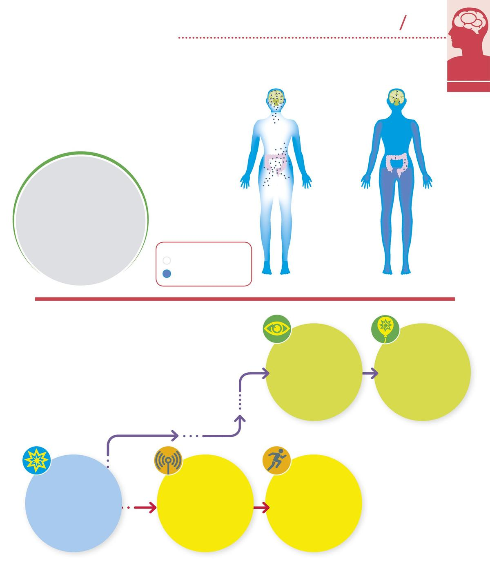
Giải phẫu của cảm xúc
Hàm lượng serotonin thấp trong não
Não sản xuất phần lớn các hormone liên quan đến hạnh phúc
Để đáp ứng với một kích thích, não khởi phát các thay đổi nội tiết tố, rồi đến lượt mình lại kích hoạt những thay đổi sinh lý chuẩn bị cho ta phản ứng phù hợp với trạng thái cảm xúc hiện tại. Nhịp tim thay đổi, lưu lượng máu đến cơ bắp bị điều chỉnh và ra mồ hôi đều liên quan đến cảm xúc dâng cao. Những thay đổi này có thể được cảm nhận rõ ràng, làm tăng cường độ của cảm xúc.
SEROTONIN
Cảm giác cơ thể tăng nhẹ vùng cổ và ngực
Nhịp tim giảm
Lượng serotonin được sản xuất ở mức thấp
Hạnh phúc và buồn bã Serotonin, dopamine, oxytocin và endorphin là những hormone ảnh hưởng sâu sắc đến hạnh phúc của chúng ta. Cảm xúc được cảm nhận khắp cơ thể, với mỗi loại cảm xúc lại được cảm nhận ở những vị trí khác nhau. Tác động của serotonin được minh họa tại đây.
Lượng lớn serotonin được ruột già sản xuất
MỤC ĐÍCH CỦA TIẾNG CƯỜI LÀ GÌ?
Cảm giác hoạt động của các chi giảm đi
Cảm giác khỏe khoắn được ghi nhận ở khắp cơ thể
Sự thư giãn sau một tràng cười sẽ ức chế phản ứng sinh học chiến đấu hay bỏ chạy (fight-or-flight).
CHÚ GIẢI
Cảm giác tích cực được ghi nhận
Cảm giác tiêu cực được ghi nhận
BUỒN BÃ
HẠNH PHÚC
Cảm xúc vô thức
Đối với những phản ứng tự động nguyên thủy, chẳng hạn như phản xạ chiến đấu hay bỏ chạy, tốc độ là yếu tố then chốt. Những kích thích mang sức mạnh cảm xúc xuất hiện quá nhanh để có thể được nhận thức rõ ràng vẫn có thể gợi ra phản ứng cảm xúc và kích hoạt hạch hạnh nhân (amygdala). Những phản ứng ban đầu này định hình cách vỏ não xử lý thông tin. Hạch hạnh nhân tham gia vào trí nhớ cảm xúc có thể được kích hoạt tự động trong tương lai.
Vỏ não cảm giác Thông tin cảm giác được truyền đến vỏ não cảm giác sẽ được xử lý kỹ lưỡng theo hướng tri giác có ý thức và được tích hợp với thông tin đã lưu trữ. Quá trình này cần thời gian.
Hải mã Hải mã (hippocampus) xử lý thông tin được nhận thức rõ ràng để hình thành trí nhớ. Nó cũng đối chiếu các tín hiệu đầu vào với những ký ức trước đó nhằm điều chỉnh phản ứng cảm xúc.
ĐƯỜNG CHẬM MÀ CHÍNH XÁC
Hai con đường Xử lý cảm xúc có ý thức bao gồm việc tích hợp thông tin cảm giác với trí nhớ đã lưu trữ và các đánh giá lý trí về tình huống — đây là “đường chậm mà chính xác”. Ngược lại, các phản ứng vô thức đi theo “đường nhanh nhưng thô thiển” lại diễn ra nhanh hơn nhiều. Vỏ não trước trán đóng vai trò quan trọng trong việc điều tiết cảm xúc có ý thức.
Đồi thị Thông tin đầu vào được chuyển tiếp đến hạch hạnh nhân để đánh giá và hành động nhanh chóng, đồng thời cũng được gửi đến các vùng vỏ não nơi nó đi vào nhận thức có ý thức.
Hạch hạnh nhân Hạch hạnh nhân lập tức đánh giá tầm quan trọng về mặt cảm xúc của nội dung thông tin đầu vào và nhanh chóng gửi tín hiệu đến các vùng khác để cơ thể hành động ngay lập tức.
Vùng dưới đồi Tín hiệu từ hạch hạnh nhân kích hoạt các thay đổi nội tiết tố và truyền ra hệ thần kinh tự chủ nhằm chuẩn bị cho cơ thể phản ứng trước các kích thích cảm xúc.
ĐƯỜNG NHANH NHƯNG THÔ THIỂN
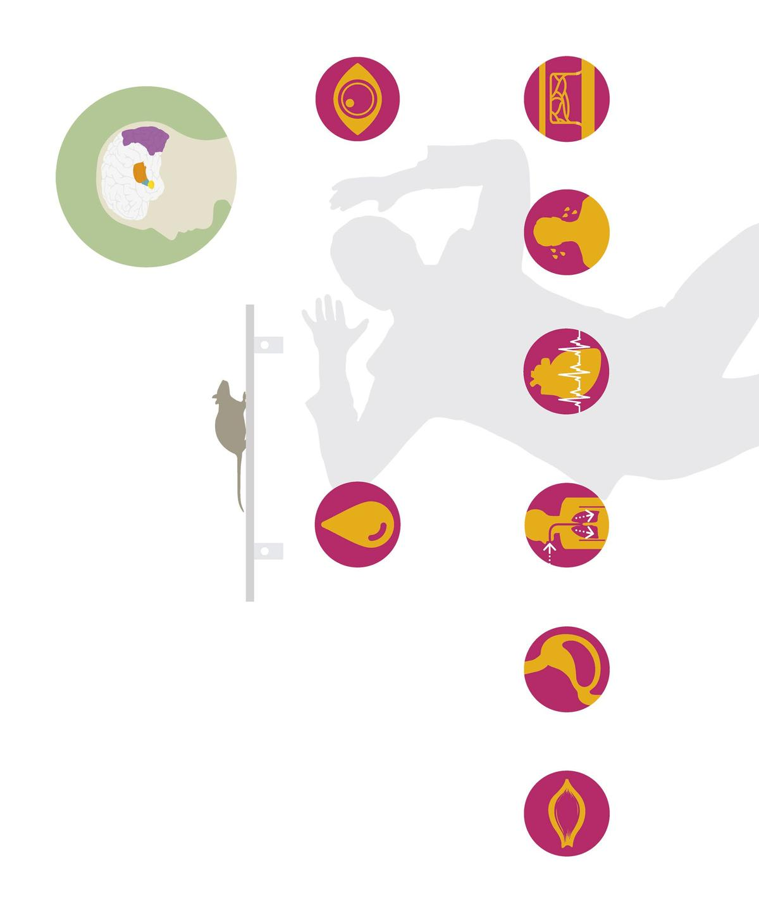
mối đe dọa rõ ràng hơn.
Đồng tử của chúng ta giãn ra, nên ta có thể nhìn thấy bề mặt của làn da, vì thế ta có thể trông có vẻ tái nhợt.
con đường liên quan đến vỏ não cũng đánh giá các hormone chiến đấu hay bỏ chạy. Một đường đi chậm hơn, có ý thức Tín hiệu truyền đến đồi thị và hạch hạnh nhân, kích hoạt vùng dưới đồi sản xuất
Mạch máu Dòng máu bị co thắt
Đồng tử giãn ra
Vùng dưới đồi
Đồi thị
Vỏ não thị giác
Phản ứng trước nguy hiểm
Ra mồ hôi nhiều hơn
đảm bảo ta không bị quá nóng khi cần gắng sức. Chúng ta bắt đầu ra mồ hôi, các tuyến mồ hôi được kích hoạt và làm mát cơ thể nếu có vận động thể lực.
tình huống (xem tr.107).
Hạch hạnh nhân
Tim chúng ta đập nhanh hơn ở nơi cần thiết trong cơ thể. để bơm máu giàu oxy và dưỡng chất đến những chỗ cần thiết.
Nhịp tim tăng
tuy nhiên, lo âu kéo dài có thể gây kích hoạt quá mức hệ thần kinh giao cảm và dẫn đến các vấn đề sức khỏe.
Sợ hãi và giận dữ kích hoạt giải phóng các hormone trong cơ thể, chuẩn bị cho ta đối phó với mối đe dọa. Trong thế giới hiện đại,
Nhịp thở tăng
chúng sẵn sàng hành động. Nhưng điều này cung cấp oxy cho cơ bắp, chuẩn bị
Sợ hãi và Giận dữ
gây khô miệng. Tiết nước bọt chậm lại khi ta sợ hãi. Điều này
Sản xuất nước bọt
thở quá mức. Nó cũng có thể gây ra các triệu chứng của
Giảm
tác động chung của các con đường này là khởi phát phản xạ chiến đấu hay bỏ chạy, giúp cơ thể ta sẵn sàng. Tín hiệu truyền đến tuyến yên và tuyến thượng thận, những tuyến tiết ra các hormone như cortisol và adrenaline.
(xem tr.13). Vùng dưới đồi cũng gửi hoạt động tiêu hóa suy giảm. Trong những trường hợp cực đoan, ta có thể nôn mửa để đẩy thức ăn chưa tiêu hóa ra ngoài.
Tiêu hóa chậm lại Để tránh lãng phí năng lượng, hệ tiêu hóa
cảm xúc. Thông tin đi đến hạch hạnh nhân của chúng ta, rồi hạch hạnh nhân gửi tín hiệu tới vùng dưới đồi — một phần nhỏ bé của não bộ xử lý cảm xúc — để chuẩn bị cho cơ thể phản ứng trước nguy hiểm.
Khi chúng ta nhìn thấy một mối đe dọa tiềm ẩn, thông tin thị giác hệ thần kinh giao cảm, chuẩn bị cho cơ thể tấn công hoặc bỏ chạy.
Chiến đấu hay bỏ chạy
Cơ bắp căng lên hay “căng như dây đàn”. Các cơ ở vai chuẩn bị cho cánh tay, chân và chính chúng sẵn sàng hành động. Chúng ta có thể cảm thấy căng thẳng.
Các cơ bắp ở
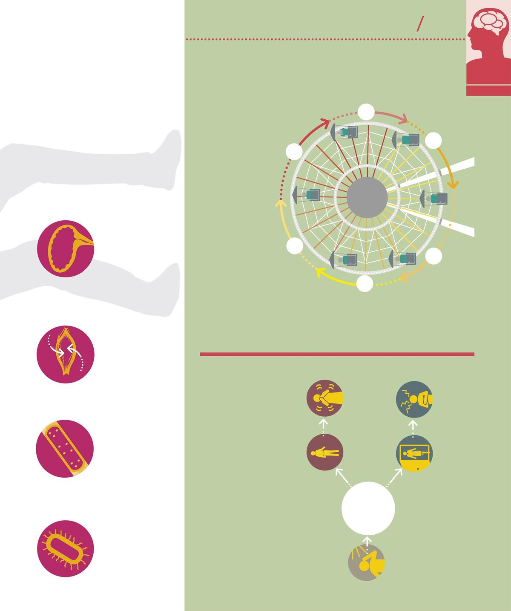
NỖI SỢ NHỆN (ARACHNOPHOBIA): NGƯỜI DÂN TRÊN TOÀN THẾ GIỚI ĐỀU SỢ NHỆN
giải phóng các hormone chiến đấu hay bỏ chạy.
Ban đầu, người bệnh có thể nghĩ rằng mình đang bị đau tim. Bước đầu tiên để phá vỡ vòng lặp là nhận ra rằng bạn đang trải qua một cơn hoảng loạn. tim đập dồn dập; đau ngực; thở nhanh, nông; và ra mồ hôi.
như tăng nhịp tim, để đáp ứng với các hormone. Những cảm giác cơ thể xuất hiện như một tác động vật lý.
Não bộ của bạn diễn giải cảm giác và nguy hiểm như một mối đe dọa.
Các cơn hoảng loạn là phản ứng thể chất trước nỗi sợ hãi hoặc lo âu. Triệu chứng bao gồm
Các cơn hoảng loạn có thể bắt đầu mà không báo trước, do căng thẳng và lo âu tích tụ. Chúng có thể có một tác nhân kích hoạt đơn lẻ, như một nỗi ám ảnh, hoặc
Diễn giải
CỦA MỌI NGƯỜI
tích tụ dần.
2
Tác nhân kích hoạt
3
1
Vòng lặp hoảng loạn
giúp ta nhẹ nhàng và nhanh chóng hơn, đồng thời
Điều này khiến ta cần đi tiểu; các cơ thư giãn, làm sạch cơ thể khỏi phần dư thừa.
Cơn hoảng loạn Nếu không được kiểm soát, điều này có thể
6
Bàng quang
4
leo thang thành một cơn hoảng loạn toàn diện. Người bệnh thậm chí có thể sợ rằng mình đang chết.
Lo âu tăng dần. Không nhận ra tại sao chuyện đó lại xảy ra và không chắc chắn về các tác nhân kích hoạt, sự lo âu của bạn cứ dâng cao.
Các cơn hoảng loạn
5
Triệu chứng tăng lên Nhiều hormone hơn được giải phóng,
khiến triệu chứng xấu đi, làm lo âu tăng thêm.
Máu mang dưỡng chất và oxy đến các cơ, chuẩn bị cho chúng chiến đấu hoặc bỏ chạy khỏi nguy hiểm.
Máu lưu thông
BẠN SỐNG MỘT MÌNH Không thể xác định được nguyên nhân, bạn thấy sợ hãi.
SỐNG CÙNG BẠN CÙNG PHÒNG
Một giả thuyết cho rằng nếu chúng ta biết tại sao một sự kiện tiêu cực xảy ra và ai chịu trách nhiệm, ta sẽ cảm thấy tức giận. Nếu không thể tìm ra nguyên nhân, hoặc nguyên nhân nằm ngoài tầm kiểm soát của ta, ta sẽ cảm thấy sợ hãi.
Chính cách chúng ta diễn giải các cảm giác mình trải qua là yếu tố quyết định việc ta thấy sợ hãi hay tức giận. Phản ứng cơ thể trước nỗi sợ và cơn giận là tương tự nhau.
Cảm giác bị diễn giải thành cơn giận về hành vi thiếu tế nhị của người khác.
Các kho dự trữ chất béo được gan giải phóng để cung cấp năng lượng cần thiết cho cơ bắp hoạt động. Các kho đường dự trữ cũng được huy động.
Đường huyết tăng vọt
Bạn sống một mình, nên bạn biết rằng không có ai khác ở đây.
Bạn nhớ lại rằng bạn nhận ra cô ấy đã ra ngoài rồi quay trở lại.
Việc chúng ta phản ứng bằng nỗi sợ hay cơn giận trước một kích thích cụ thể thường phụ thuộc vào bối cảnh.
Phản xạ chiến đấu hay bỏ chạy được kích hoạt
Tức giận hay sợ hãi?
hệ miễn dịch tạm ngưng hoạt động để tiết kiệm năng lượng.
Hoạt động của hệ miễn dịch suy giảm
Trong khoảnh khắc đó, việc đối phó với nhiễm trùng không phải là ưu tiên hàng đầu.
Bối cảnh là chìa khóa
Bạn bị đánh thức bởi tiếng ồn lớn ở tầng dưới vào giữa đêm.

Biểu cảm khuôn mặt theo phản xạ
Biểu cảm khuôn mặt có ý thức
Cảm xúc Những cảm xúc kéo dài được định hình bởi các giác quan, tính khí, trí nhớ, tín hiệu cơ thể và sự chú ý.
VỎ NÃO VẬN ĐỘNG
VỎ NÃO VẬN ĐỘNG
TRUNG TÂM CẢM XÚC CỦA NÃO
Sự can thiệp có ý thức Việc vỏ não trán phân tích tình huống định hình kỳ vọng và điều chỉnh quá trình xử lý cảm xúc.
Tín hiệu Các tín hiệu cơ thể như nhịp tim, ra mồ hôi, căng hay thư giãn cơ bắp, và run rẩy đều góp phần định hình cảm xúc.
Biểu cảm Nụ cười trên khuôn mặt vừa là sản phẩm vừa là yếu tố ảnh hưởng đến cảm xúc — chẳng hạn, cười làm tâm trạng phấn chấn hơn.
NỤ CƯỜI THEO PHẢN XẠ
NỤ CƯỜI CÓ Ý THỨC
Nơ-ron vận động
Nơ-ron vận động
Biểu cảm khuôn mặt theo phản xạ Cảm xúc tạo ra biểu cảm trên khuôn mặt ngoài tầm kiểm soát của chúng ta. Ví dụ, khi nghe tin tốt, ta tự động mỉm cười. Hạch hạnh nhân và các bộ phận khác của hệ viền khởi phát những hành động phản xạ này.
Biểu cảm khuôn mặt có ý thức Sau khi bắt đầu trải qua một cảm xúc, chúng ta có thể thay đổi biểu cảm để che giấu hoặc củng cố cảm xúc thật của mình. Hành động như vậy đòi hỏi sự tham gia có ý thức của vỏ não vận động.
Cảm xúc có ý thức
Sự hình thành cảm xúc Cả biểu cảm phản xạ lẫn có ý thức đều do vỏ não vận động trung gian, nhưng biểu cảm phản xạ được gửi tín hiệu trực tiếp đến vùng vận động từ hệ viền thay vì đi qua thùy trán. Chúng ta cũng có thể chủ động điều chỉnh phản ứng cơ thể trước cảm xúc.
Hình thành cảm xúc
Cảm xúc được cảm nhận rõ ràng và dù tích cực hay tiêu cực, thay đổi hay ổn định, chúng đều ảnh hưởng lớn đến chất lượng cuộc sống của chúng ta. Những cảm giác có ý thức không ngừng tương tác với các quá trình vô thức cũng định hình cảm xúc của ta.
Phản ứng cảm xúc phức tạp và luôn biến đổi. Chúng xuất hiện khi những phản ứng bẩm sinh nhanh chóng trước các kích thích tương tác với phân tích chi tiết. Các phản ứng bẩm sinh tiến hóa thành những phản ứng có lợi nhất trước các kích thích then chốt. Một khi những kích thích đó thu hút được sự chú ý của một người, thì đánh giá lý trí sẽ tiếp theo. Sau đó, cách cảm xúc của người đó thay đổi được định hình bởi tính khí, kinh nghiệm trong quá khứ và cách họ đánh giá nhiều dòng thông tin khác nhau.
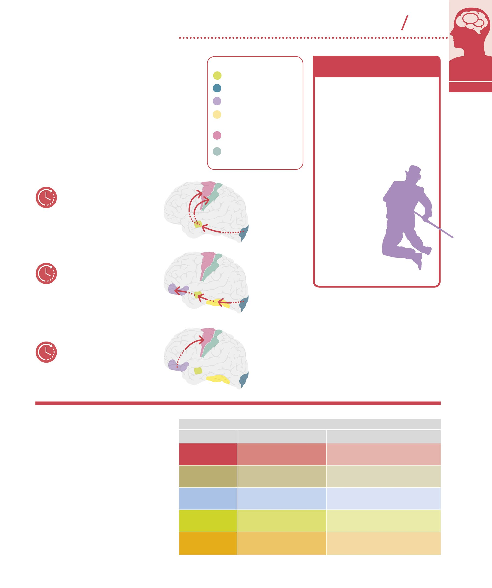
Phản ứng cảm xúc
SEROTONIN
CHÚ GIẢI
Phản ứng cảm xúc tiến triển theo thời gian, từ những phản ứng bảo vệ ban đầu đến những phản ứng được cân nhắc kỹ hơn. Hãy tưởng tượng một người bạn bất ngờ nhảy ra trước mặt bạn: đầu tiên bạn giật mình hoặc sợ hãi, nhưng khi não xử lý điều đang xảy ra, bạn chuyển sang trạng thái bình tĩnh. Giai đoạn đầu tiên bao gồm việc sự chú ý bị chiếm lấy và hạch hạnh nhân phản ứng sớm để chuẩn bị cho não bộ có ý thức “kỳ vọng” một nhận thức quan trọng.
Hạch hạnh nhân
Cùng với dopamine và noradrenaline, serotonin là một chất dẫn truyền thần kinh đóng vai trò then chốt trong việc điều hòa tâm trạng. Dù vấn đề không đơn giản đến mức serotonin cao đồng nghĩa với hạnh phúc và thấp đồng nghĩa với buồn bã, thì sự suy giảm của phân tử này lại liên quan đến trầm cảm và lo âu. Nhiều thuốc chống trầm cảm hoạt động bằng cách tăng mức serotonin trong não. Vận động cũng có ích — chẳng hạn, đi bộ nhanh nhẹn hoặc nhảy múa có thể nâng cao mức serotonin.
Vỏ não thị giác chính
Vỏ não trán
Hồi fusiform (fusiform gyrus, vùng nhận diện khuôn mặt)
Vỏ não vận động
Vỏ não đỉnh
Tín hiệu truyền đến vỏ não vận động và vỏ não đỉnh
Dưới 100 mili-giây Thông tin cảm giác đi đến hạch hạnh nhân, rồi hạch hạnh nhân gửi
tín hiệu đến vỏ não đỉnh rồi đến vỏ não vận động để tạo ra phản ứng nhanh trước kích thích cảm xúc, chẳng hạn như khi bỏ chạy khỏi nguy hiểm.
Tín hiệu truyền đến hạch hạnh nhân
Tín hiệu từ các vùng cảm giác
100–200 mili-giây Thông tin sau đó đến các thùy trán, nơi nó
Đường nhận diện trở nên rõ ràng có ý thức và hành động phù hợp được lên kế hoạch.
CẢM XÚC CÓ TÍNH LÂY NHIỄM — CON NGƯỜI BẮT CHƯỚC BIỂU CẢM CỦA NHAU
Thông tin được ghi nhận ở vỏ não trán
Tín hiệu từ thùy trán đến vỏ não vận động
350 mili-giây Các phản ứng đã được cân nhắc sau đó được truyền ngược trở lại
vỏ não vận động, nơi phát tín hiệu cho các phản ứng cơ thể phù hợp.
Cảm xúc so với tâm trạng
HÀNH VI THÍCH ỨNG
Cảm xúc thường chỉ thoáng qua — phát sinh từ những ý nghĩ, hoạt động hoặc sự kiện đóng vai trò là tín hiệu cho hành vi thích ứng. Tâm trạng thì kéo dài hàng giờ, vài ngày, thậm chí vài tháng. Ví dụ, cảm xúc có thể là cơn vui bất chợt khi thấy một người bạn đang đợi chào bạn, so với tâm trạng buồn bã hoặc lo lắng kéo dài sau khi mất việc. Cảm xúc có xu hướng được bộc lộ ngay tại thời điểm đó, còn tâm trạng thì không.
CẢM XÚC
KÍCH THÍCH CÓ THỂ XẢY RA
Hành vi thách thức từ một người khác
Phản ứng “chiến đấu” thúc đẩy tư thế hoặc hành động áp chế và đe dọa
Tức giận
Mối đe dọa từ một người mạnh hơn hoặc áp chế hơn
“Bỏ chạy” để tránh mối đe dọa; hoặc hành động nhằm xoa dịu người đe dọa về mặt xã hội
Sợ hãi
Trạng thái tâm trí hướng về quá khứ và thụ động, nhằm tránh thêm thách thức
Buồn bã
Mất đi người thân yêu
Đối tượng không lành mạnh (ví dụ: thức ăn thối rữa) Hành vi tránh né — rời bỏ môi trường không sạch sẽ
Ghê tởm
Sự chú ý tập trung vào đối tượng gây bất ngờ sẽ tối đa hóa đầu vào cảm giác, dẫn dắt phản ứng
Bất ngờ
Sự kiện mới lạ hoặc bất ngờ
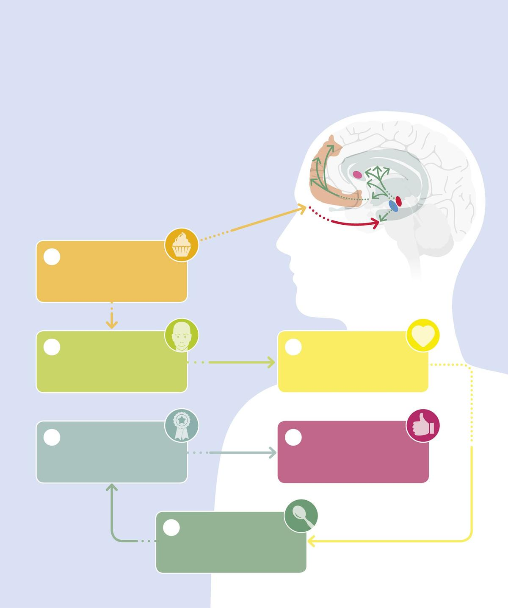
Dòng dopamine dồn dập báo hiệu cho não lặp lại hoạt động đó
Hệ thống phần thưởng của não tiến hóa vì giúp chúng ta tìm kiếm những thứ quan trọng cho sự sống còn. Nhưng nếu hệ thống này bị chiếm quyền, nó có thể dẫn đến nghiện ngập.
Sự chú ý tập trung vào hoạt động
Các nơ-ron dopamine được kích hoạt và chiếu sang các vùng khác của não
Các đường phần thưởng
Vỏ não trán · Nhân nằm (nucleus accumbens)
Khi chúng ta làm điều gì đó quan trọng cho sự sống còn, chẳng hạn như ăn khi đói hay giao hợp, các nơ-ron kích hoạt giải phóng chất dẫn truyền thần kinh dopamine sẽ được kích thích ở vùng vỏ não trung gian bụng (ventral tegmental area, VTA). Chúng gửi tín hiệu tới một vùng gọi là nhân nằm — sự dồn dập dopamine tại đây báo cho não biết đây là hành vi nên lặp lại. Các nơ-ron cũng gửi tín hiệu đến vỏ não trán, nơi tập trung sự chú ý vào hoạt động có lợi.
CHẤT ĐEN (SUBSTANTIA NIGRA)
HỆ VIỀN VTA
ÁNH SÁNG ĐI VÀO MẮT
Kích thích Kích thích ban đầu có thể phát sinh
1
Đường đến phần thưởng Hệ thống phần thưởng khởi đầu ở VTA trong não giữa, rồi đi tới nhân nằm ở các hạch nền và sau đó là vỏ não trán. Dopamine cũng đi từ chất đen (substantia nigra) đến các hạch nền. Con đường này ảnh hưởng đến kiểm soát vận động.
Thông tin cảm giác được ghi nhận ở hệ viền bên ngoài cơ thể, chẳng hạn như nhìn thấy thức ăn, hoặc từ bên trong, chẳng hạn như mức glucose giảm xuống.
Thúc đẩy Dopamine được giải phóng từ
Khát vọng Sự thúc đẩy có thể được ghi nhận là
2
3
VTA đến nhân nằm thúc đẩy chúng ta tìm kiếm và nỗ lực giành lấy phần thưởng liên quan đến kích thích đó.
một mong muốn có ý thức ở vỏ não, nhưng đôi khi nó không được nhận ra, thậm chí còn đối lập với mong muốn có ý thức của chúng ta.
Phần thưởng Phần thưởng kích hoạt các bộ phận của
Học tập Nếu phần thưởng tốt hơn
5
6
não được gọi là “điểm nóng khoái lạc”, giải phóng các chất dẫn truyền thần kinh giống opioid, mang lại cảm giác thích thú.
dự kiến, não sẽ giải phóng nhiều dopamine hơn, củng cố mối liên hệ giữa kích thích và phần thưởng.
Hành động Một vùng của vỏ não trán
4
cân nhắc các đầu vào và quyết định có tìm kiếm phần thưởng hay không. Sau đó cơ thể hành động để đạt được nó.
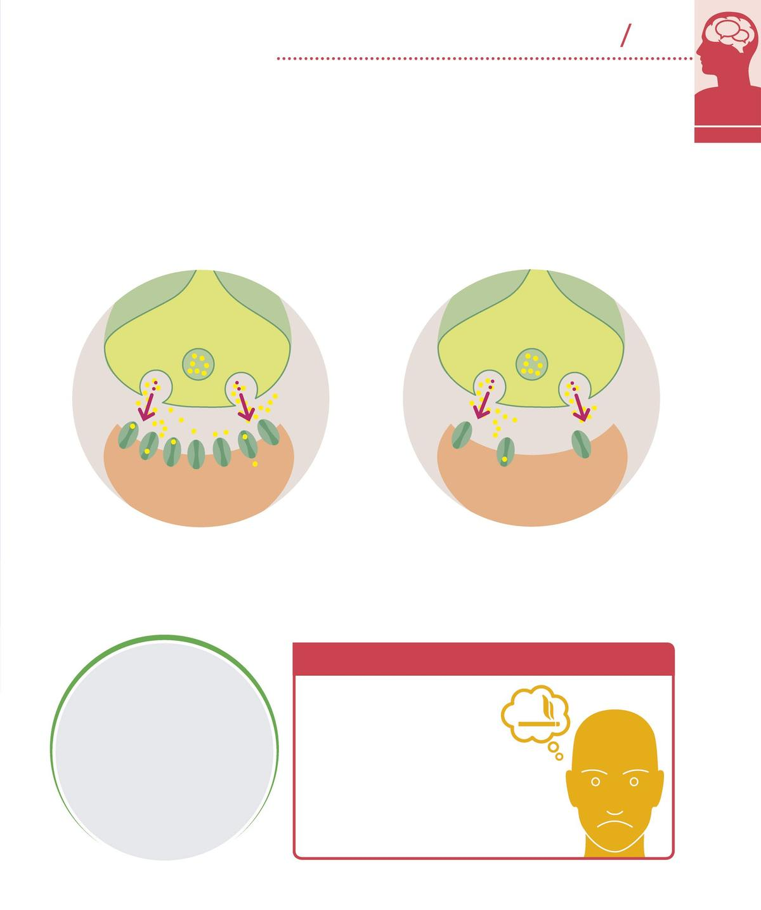
Nghiện ngập
TỚI 60% NGUY CƠ NGHIỆN NGẬP BẮT NGUỒN TỪ CÁC YẾU TỐ DI TRUYỀN
Hầu hết các chất gây nghiện khiến một lượng lớn dopamine tích tụ trong hệ thống phần thưởng — nhiều hơn hẳn so với các phần thưởng tự nhiên như thức ăn hay tình dục. Điều này tạo ra một động lực mạnh mẽ để tìm kiếm thêm chất đó. Nó cũng khiến não giảm số lượng thụ thể dopamine, nên các phần thưởng tự nhiên không còn mang lại cảm giác như trước. Người dùng vì thế mất đi ham muốn tìm kiếm những thứ như thức ăn và giao tiếp xã hội. Thay vào đó, các tín hiệu liên quan đến chất gây nghiện trở thành những tác nhân kích hoạt mạnh sự giải phóng dopamine, gây ra cơn thèm muốn dữ dội, ngay cả khi người đó ý thức muốn dừng lại và không còn thấy thích thú với chất đó nữa.
Khớp thần kinh bình thường
Giải phóng dopamine bình thường
SỰ CHỊU ĐỰNG
Các túi chứa trong tế bào thần kinh giải phóng chất dẫn truyền thần kinh
NƠ-RON TRƯỚC KHỚP
NƠ-RON TRƯỚC KHỚP
Chất dopamine
Chất dopamine
KHỚP THẦN KINH
KHỚP THẦN KINH
THỤ THỂ
THỤ THỂ
Không có nhiều thụ thể
Nhiều thụ thể
NƠ-RON SAU KHỚP
NƠ-RON SAU KHỚP
Ngập trong dopamine Một số chất gây nghiện làm tăng giải phóng dopamine, trong khi số khác ngăn không cho chất này được tái chế. Sự tích tụ trong khớp thần kinh tạo ra phản ứng lớn trong não, khơi gợi động lực tìm kiếm thêm chất đó. Các tín hiệu môi trường trở nên liên kết với chất gây nghiện và có thể kích hoạt cơn thèm trong tương lai.
Trong tình trạng chịu đựng Theo thời gian, não giảm số lượng thụ thể dopamine để đối kháng với lượng dư thừa. Giờ đây, khi một lượng dopamine bình thường được giải phóng, nó gần như không còn tác dụng. Người dùng có thể cần liều lượng ngày càng lớn để cảm nhận được hiệu ứng, trong khi ham muốn với các phần thưởng khác suy giảm.
MONG MUỐN SO VỚI THÍCH THÚ
TẠI SAO ĐỒ ĂN NHANH LẠI NGON ĐẾN THẾ?
Đường phần thưởng thường được gọi là “đường khoái lạc”, còn dopamine được gọi là “chất hóa học của niềm vui”, nhưng cách gọi này không chính xác. Dopamine trong nhân nằm thúc đẩy sự “mong muốn” phần thưởng, nhưng người nghiện thường trải qua cơn thèm dữ dội mà không hề thích tác động của chất gây nghiện. Khoái lạc nhiều khả năng do các chất dẫn truyền thần kinh khác gây ra, chẳng hạn như opioid hoặc endocannabinoid.
Hầu hết đồ ăn nhanh chứa nhiều đường, muối và chất béo, kích hoạt hệ thống phần thưởng của chúng ta. Điều này từng giúp ta sống sót khi thức ăn còn khan hiếm.
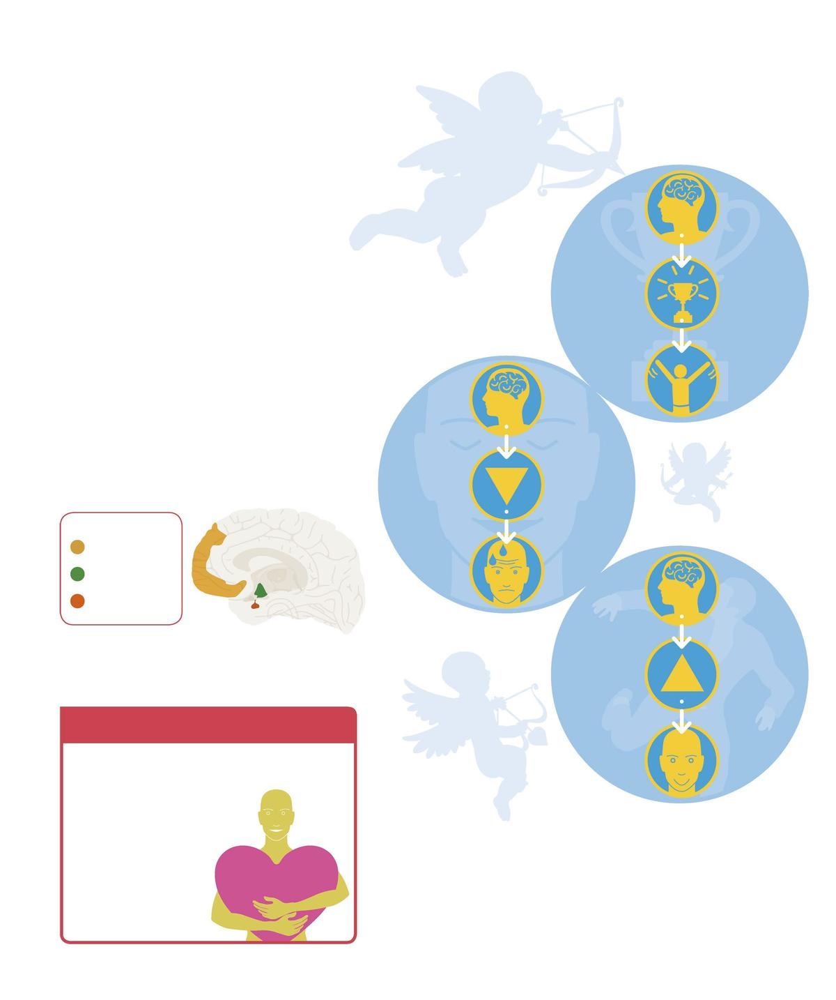
Sinh sản hữu tính là nền tảng để truyền lại các gen của chúng ta. Nhiều cảm xúc đã tiến hóa để đi cùng và hỗ trợ quá trình này, và cùng nhau chúng có thể tạo nên cảm giác yêu.
DOPAMINE
Não sản xuất dopamine
Yêu và hấp dẫn
Việc nghiên cứu khoa học về tình yêu và hành vi tình dục đã xác định ba thành phần chính: sự hấp dẫn, sự gắn bó và ham muốn tình dục. Các trạng thái này diễn ra trên những khung thời gian khác nhau và liên quan đến các vùng khác nhau của não sản xuất nhiều chất trung gian hóa học — chất dẫn truyền thần kinh và hormone. Ham muốn và sự hấp dẫn đan xen chặt chẽ, cả hai đều thoáng qua và trôi đi trong một thời gian tương đối ngắn. Để mối quan hệ bền vững, những trạng thái này phải chuyển hóa thành sự gắn bó sâu sắc, vốn liên quan đến những thay đổi lâu dài trong não.
Đường phần thưởng trong não được kích hoạt
Cảm giác hứng khởi và phấn khích
SEROTONIN
Não sản xuất ít serotonin hơn
Mức serotonin giảm xuống
Mất cảm giác thèm ăn, mất ngủ, cảm giác ám ảnh
CHÚ GIẢI
NORADRENALINE
Vỏ não trước trán
Vùng dưới đồi
Tuyến yên
Não sản xuất noradrenaline
Các vùng não Vùng dưới đồi và tuyến yên kiểm soát các giai đoạn đầu của sự gắn bó do hormone dẫn dắt. Sau đó, vỏ não trước trán trung gian cho việc kiểm soát cảm xúc liên quan đến sự gắn bó.
Mức noradrenaline tăng lên
Mức năng lượng tăng lên, tim đập nhanh, ăn uống kém đi, mất ngủ
CHẤT THUỐC TÌNH YÊU
Oxytocin do vùng dưới đồi giải phóng từ lâu đã được biết đến như hormone gây chuyển dạ ở động vật có vú. Sau đó người ta phát hiện nó then chốt cho sự gắn bó giữa mẹ và con, rồi về sau lại là trung tâm của việc hình thành mối gắn bó lâu dài trong các mối quan hệ tình dục và xã hội.
Sự hấp dẫn Những đợt giải phóng dồn dập của các chất trung gian dopamine và noradrenaline kết hợp với mức serotonin giảm xuống tạo nên cảm giác hấp dẫn cấp bách. Trong trạng thái đầy năng lượng — tim đập nhanh, lòng bàn tay ra mồ hôi và ăn uống kém — chúng ta liên tục nghĩ về người mình yêu, khao khát được ở bên họ.

Tính đối xứng của khuôn mặt
OXYTOCIN GIẢM HOẠT ĐỘNG CỦA TRUNG TÂM SỢ HÃI TRONG NÃO
Khuôn mặt của một người là chìa khóa quyết định mức độ hấp dẫn của họ trong mắt người khác. Con người và khỉ đều ưa chuộng khuôn mặt đối xứng — tính đối xứng là dấu hiệu của sức khỏe tốt và di truyền lành mạnh. Nhiều loài cũng ưa chuộng khuôn mặt có sự khác biệt giới tính rõ rệt: nam giới thích khuôn mặt nữ tính và ngược lại. Các yếu tố này tương tác với nhau: đối xứng cao hơn khiến khuôn mặt được cảm nhận là nữ tính hoặc nam tính hơn.
OXYTOCIN
Não sản xuất oxytocin
Mức oxytocin tăng lên
CÁC HORMONE
CHÚ GIẢI
Cảm giác gắn bó và viên mãn
Khuôn mặt đối xứng
Khuôn mặt không đối xứng
NỮ
NAM
Vùng dưới đồi kích hoạt tinh hoàn hoặc buồng trứng sản xuất hormone giới tính
Tỷ lệ người thấy khuôn mặt mang đặc điểm giới tính điển hình
Mức testosterone và estrogen tăng lên
69%
85%
Ham muốn tình dục tăng lên
Não sản xuất vasopressin
31%
15%
Mức vasopressin tăng lên
Người châu Âu Khi được xem những khuôn mặt tổng hợp có mức đối xứng cao hoặc thấp, người quan sát châu Âu đánh giá những khuôn mặt đối xứng cao trông nữ tính hoặc nam tính hơn.
Cảm giác gắn bó và chú ý đến người khác
62%
60%
VASOPRESSIN
HORMONE VASOPRESSIN
Tỷ lệ người thấy khuôn mặt mang đặc điểm giới tính điển hình
37%
39%
Sự gắn bó Các hormone oxytocin và vasopressin có nhiều tác động — trong đó có việc khiến chúng ta cảm thấy bảo vệ đối tượng mình hấp dẫn và chú ý đến nhu cầu của họ. Chúng kích thích hình thành mối gắn bó lâu dài nhưng cũng có thể làm tăng sự không tin tưởng với người khác.
Ham muốn tình dục Ham muốn là xung lực nguyên thủy muốn tham gia vào các mối quan hệ tình dục, do các hormone giới tính testosterone và estrogen thúc đẩy. Dù chúng lần lượt làm tăng ham muốn ở nam và nữ, riêng chúng không tạo ra được mối liên kết bền lâu.
Người Hadza Những kết quả tương tự cũng được ghi nhận ở người Hadza, một nhóm sắc tộc bản địa tại Tanzania. Điều này gợi ý rằng mối liên hệ giữa tính đối xứng và sức hấp dẫn là phổ quát.

Giai đoạn đầu của biểu cảm tức giận hoặc ghê tởm là tương tự nhau
NỖI BUỒN
SỰ GHÊ TỞM
SỰ TỨC GIẬN
Mũi nhăn lại
Lông mày trong nhướn lên
Lông mày hạ xuống
Miệng cong xuống
Môi mím lại
Môi trên nhếch lên
Cơn giận khiến lông mày hạ xuống, môi mím lại và mắt lồi ra. Người quan sát sẽ dè chừng với người đang biểu lộ cơn giận.
Sự ghê tởm đi cùng với mũi nhăn lại, má và môi trên nhếch lên. Việc nhăn mũi ngăn người đó hít phải mùi khó chịu.
Người buồn sẽ kéo khóe môi xuống, đồng thời nhướn lông mày ở trong và hạ lông mày ở ngoài. Biểu cảm này có thể gợi ra sự thông cảm.
Biểu cảm phổ quát
VIỂU CẢM SIÊU NHỎ
Các nhà tâm lý học đã phát hiện có sáu cảm xúc phổ quát: tức giận, ghê tởm, buồn bã, hạnh phúc, sợ hãi và bất ngờ. Giống như các màu cơ bản, chúng kết hợp với nhau để tạo ra vô số cảm xúc mà chúng ta trải nghiệm. Mỗi cảm xúc gắn với một biểu cảm khuôn mặt đặc trưng, tương tự ở mọi nền văn hóa. Biểu cảm vừa do sinh học vừa do xã hội chi phối. Ví dụ, khi bất ngờ hoặc sợ hãi, việc mở to mắt giúp thu nhận nhiều ánh sáng hơn để quan sát tình huống rõ hơn. Nhưng những khía cạnh khác của biểu cảm lại tiến hóa để truyền tín hiệu xã hội tới các thành viên cùng loài.
Biểu cảm siêu nhỏ là những biểu cảm trên khuôn mặt cực kỳ nhỏ, không tự chủ và thường khó nhận ra. Chúng chỉ kéo dài nửa giây hoặc ít hơn, và người biểu lộ có thể không hề hay biết rằng hình thức “rò rỉ cảm xúc” này đang bộc lộ cảm xúc thật của họ.
Biểu cảm
Biểu cảm là sự nối dài của cảm xúc. Chúng cho phép chúng ta truyền đạt cảm xúc của mình tới người khác và suy ra suy nghĩ, cảm xúc của những người xung quanh. Các nhà tâm lý học tin rằng có sáu cảm xúc cơ bản, mỗi cảm xúc đi kèm với một biểu cảm tương ứng.
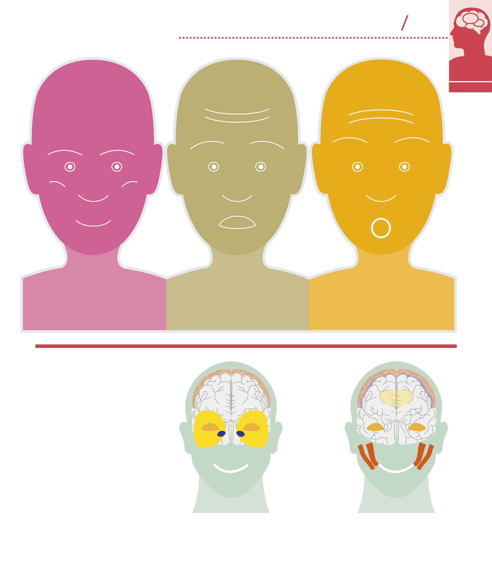
HẠNH PHÚC
BẤT NGỜ
SỢ HÃI
Má nhướn lên
Lông mày nhướn lên
Mắt mở to và các đặc điểm khác thường thấy ở giai đoạn đầu của biểu cảm sợ hãi hoặc bất ngờ
Hàm rơi xuống
Khi vui, chúng ta nhếch khóe môi lên và nâng má lên — da dưới mắt nhăn lại và người ta nói rằng mắt long lanh.
Biểu cảm sợ hãi đặc trưng gồm lông mày nhướn cao, mắt mở to và miệng há ra. Điều này báo hiệu cho người khác phải cảnh giác cao độ.
Khi bất ngờ, người ta nhanh chóng mở to mắt và cong lông mày lên, đồng thời hàm dưới rơi xuống, để miệng há hốc.
Vỏ não vận động
Vỏ não vận động
Cười
Vỏ não trán
Nụ cười có thể là biểu cảm chân thực của tâm trạng tích cực, hoặc một hành động có ý thức vì lý do xã hội. Nụ cười thật là hành động vô thức, dùng những nhóm cơ khác với nụ cười xã giao. Dù cả hai đều làm miệng giãn ra với khóe môi nhếch lên, người cười thật sẽ co thắt các cơ nâng má, tạo ra “vết chân quạ” quanh mắt. Nụ cười có ý thức thì cấu trúc chính xác thay đổi và được dùng trong nhiều tương tác xã hội — chúng có thể gắn kết mọi người nhưng cũng được dùng để thể hiện vị thế áp chế, và đôi khi người ta cười để che giấu sự ngượng ngùng.
Hạch hạnh nhân
Tín hiệu khiến cơ quanh miệng co lại và kéo môi sang hai bên ở cả hai loại nụ cười
Tín hiệu khiến các cơ nhỏ quanh hốc mắt co lại
Nụ cười thật Sự co cơ liên quan đến nụ cười thật được kích hoạt bởi tín hiệu từ các trung tâm cảm xúc của não, chẳng hạn như hạch hạnh nhân, thường hoạt động ngoài nhận thức của chúng ta.
Nụ cười có ý thức Việc kiểm soát có ý thức nụ cười xã giao liên quan đến kích hoạt vỏ não trán và tín hiệu từ vỏ não vận động. Cơ miệng co lại, nhưng chúng ta không thể điều khiển cơ mắt.

HẠNH PHÚC
Từ một điểm nghỉ ngơi, đồng tử (pupil) có thể co lại hoặc giãn ra.
Ngôn ngữ
Ngôn ngữ cơ thể (body language) là hình thức giao tiếp phi ngôn ngữ, trong đó suy nghĩ, ý định hoặc cảm xúc của chúng ta được thể hiện qua các hành vi cơ thể như tư thế, cử chỉ, cử động mắt và biểu cảm khuôn mặt.
BÌNH THƯỜNG
Các cơ mống mắt co lại để phóng to đồng tử.
GIÃN TO
Giao tiếp không có ý thức
Tín hiệu từ mắt Đồng tử thường xuyên thay đổi kích thước và có thể báo hiệu nhiều điều. Đồng tử giãn to có thể cho thấy sự ngạc nhiên hoặc hấp dẫn. Đồng tử co lại liên quan đến các cảm xúc tiêu cực như giận dữ.
Các tương tác xã hội giữa người với người bao hàm những dòng giao tiếp phi ngôn ngữ phức tạp được xử lý song song với lời nói. Nhiều khía cạnh của ngôn ngữ cơ thể hình thành một cách bản năng — chẳng hạn cử động mắt, biểu cảm khuôn mặt và tư thế đều thay đổi mà không cần kiểm soát có ý thức. Vì vậy, những cử động này có thể bộc lộ những ý định không thành lời. Ngôn ngữ cơ thể cũng được dùng để báo hiệu công khai các ý định xã hội, chẳng hạn như khi gửi nụ hôn gió. Sự phong phú của hình thức giao tiếp này liên quan đến toàn bộ cơ thể, và não bộ chúng ta rất nhạy bén với nó.
HƯNG HĂNG
HƠN 50 PHẦN TRĂM CỦA GIAO TIẾP DỰA TRÊN NGÔN NGỮ CƠ THỂ
Hồi thái dương trên; vỏ não quỹ đạo trán.
CỬ CHỈ CÓ CÙNG Ý NGHĨA Ở MỌI NƯỚC TRÊN THẾ GIỚI KHÔNG?
Không. Nhiều cử chỉ mang tính đặc thù văn hóa. Một cử chỉ tay đơn giản có thể có ý nghĩa khác nhau đối với các xã hội khác nhau.
Hạch hạnh nhân.
Xử lý của não Việc xử lý ngôn ngữ cơ thể liên quan đến các vùng như hạch hạnh nhân, vùng tiếp nhận nội dung cảm xúc; một phần của hồi thái dương trên, vùng phản ứng với việc nhìn thấy chuyển động của con người; và vỏ não quỹ đạo trán, vùng phân tích ý nghĩa. Những tế bào đặc biệt gọi là tế bào thần kinh gương (mirror neurons) cũng được kích hoạt khi bạn nhìn thấy người khác cử động.

BUỒN
Cử chỉ
Hầu hết ngôn ngữ cơ thể được thực hiện mà không cần ý thức, nhưng chúng ta có quyền kiểm soát có ý thức lớn hơn đối với cử chỉ của mình — những cử động của cơ thể được dùng để truyền đạt ý nghĩa. Có bốn loại cử chỉ: mang tính biểu tượng (hay biểu trưng), mang tính chỉ dẫn (hay chỉ số), mang tính vận động (hay nhịp điệu), và mang tính từ vựng (hay biểu tượng hình ảnh). Chúng có thể được dùng thay cho lời nói hoặc đi cùng lời nói để nhấn mạnh. Một số nhà khoa học cho rằng các cử chỉ ngày càng phức tạp đã tiến hóa như những tiền chất của lời nói — thứ hiện đang định nghĩa loài người chúng ta.
Biểu cảm khuôn mặt Biểu cảm khuôn mặt bộc lộ nhiều điều về cảm xúc của một người (xem tr.116–117). Đặc biệt, mắt và miệng tự động phản ứng với những cảm xúc mạnh, dù con người có thể cố ý thay đổi biểu cảm để che giấu cảm xúc.
Mang tính biểu tượng
Đây là những cử chỉ có thể được dịch sát nghĩa thành lời — chẳng hạn vẫy tay chào hoặc làm dấu “okay”. Chúng được công nhận rộng rãi trong một nền văn hóa nhất định nhưng có thể không được nhận biết ở ngoài nền văn hóa đó.
PHÒNG THỦ
Mang tính chỉ dẫn
Các cử chỉ chỉ dẫn bao gồm chỉ tay hoặc dùng cách khác để chỉ một vật cụ thể, một người, hay một đối tượng trừu tượng hơn. Dùng kèm hay không kèm lời nói, chúng hoạt động như các đại từ, mang nghĩa “cái này” hoặc “cái kia”.
CÁC LOẠI CỬ CHỈ
Tư thế Một tư thế hưng hăng có xu hướng làm tăng kích thước của một người. Nó có thể bao gồm duỗi tay, đặt hai chân xa nhau và nhô ngực ra. Những tư thế tương tự cũng có thể được dùng để xâm lấn không gian cá nhân của người khác. Ngược lại, tư thế phòng thủ thì khép kín — chẳng hạn khoanh tay là một dấu hiệu điển hình.
Mang tính vận động
Loại cử chỉ này thì ngắn gọn và gắn liền với nhịp điệu lời nói, chẳng hạn cử động tay theo nhịp nói, và được dùng để nhấn mạnh. Các cử chỉ vận động không chứa ý nghĩa cố hữu và trở nên vô nghĩa nếu không có âm thanh đi kèm.
Mang tính từ vựng
Những cử chỉ này mô tả hành động, con người hoặc vật thể, chẳng hạn làm ra vẻ ném bóng khi kể chuyện ném bóng, hoặc dùng tay để mô tả kích thước của một vật. Chúng thường đi kèm lời nói nhưng vẫn chứa ý nghĩa độc lập.
NGÔN NGỮ KÝ HIỆU
Ngôn ngữ ký hiệu có vẻ như một dạng tinh vi của ngôn ngữ cơ thể, nhưng thực ra nó giống lời nói hơn. Các nghiên cứu cho thấy khi người ta dùng ký hiệu, những vùng não giống nhau (xem bên phải) lại sáng lên như khi họ nói. Ngôn ngữ ký hiệu có ngữ pháp, và mỗi cử chỉ có một ý nghĩa cụ thể, trong khi ngôn ngữ cơ thể thì được hiểu theo nghĩa rộng.
Vùng Broca.
Vỏ não vận động.
Vùng thính giác.
Vùng Wernicke.

Làm thế nào để biết ai đó đang nói dối
Việc phân biệt sự thật và dối trá một phần phụ thuộc vào việc bạn có hiểu rõ một người hay không, để bạn có thể đánh giá xem họ có cư xử khác thường hay không. Với một người nói chuyện tự tin và thuyết phục, đặc biệt là người bạn không quen biết, thì việc nhận ra một lời nói dối dễ dàng đến mức nào?

Dấu hiệu từ lời nói
Câu trả lời ngắn gọn là: rất khó. Những dấu hiệu truyền thống được cho là biểu lộ sự nói dối gồm dời ánh mắt để tránh giao tiếp bằng mắt, khoanh rồi lại mở tay, nhún vai, và tay chân bồn chồn. Tuy nhiên, các nghiên cứu khoa học không ủng hộ những niềm tin này. Một số người thành thật vốn đã hay lo lắng và ngượng ngùng. Ở những người khác, các dấu hiệu đó cho thấy họ đang tập trung tỏ ra đáng tin cậy. Máy đo đa nghi, hay “máy phát hiện nói dối”, ghi lại nhịp mạch, nhịp thở, huyết áp và mồ hôi, có một lịch sử đầy nghi vấn. Một phần là do áp lực khi sử dụng chúng. Những người vô tội nhưng lo âu có thể bị cho là gian dối, trong khi những kẻ nói dối điềm tĩnh và tài tình lại dễ dàng vượt qua.
sự hợp tác hoàn toàn của người đó. Một số vùng nhất định của não bộ hoạt động mạnh hơn khi nói dối và cùng xuất hiện trên màn hình. Đó là các vỏ não trước trán, đỉnh và đai trước, cùng với nhân đuôi, đồi thị và hạch hạnh nhân. Tóm lại: • Hết sức thận trọng khi đánh giá một người bạn không quen biết rõ. • Đừng dựa vào những dấu hiệu truyền thống như bồn chồn hay thiếu giao tiếp bằng mắt. • Những dấu hiệu từ lời nói, chẳng hạn sự do dự và lặp lại, có thể đáng tin hơn một chút. • Trong nhiều cuộc thử nghiệm, một “cảm giác ruột gan” đơn giản cũng thành công như hầu hết các phương pháp khác.
Lời nói có thể đáng tin hơn một chút. Do dự, lặp lại từ hoặc cụm từ, ngắt quãng câu, thay đổi giọng điệu hoặc tốc độ nói, nói mơ hồ, và kể lể những tiết nhỏ nhặt trong khi lảng tránh chủ đề chính — tất cả là những chiến lược để giúp não có “thời gian suy nghĩ” và xác định lời nói dối nào có vẻ đáng tin nhất. Điều này đặc biệt đúng với những kẻ nói dối thường xuyên, vì chúng phải truy cập trí nhớ để không tự mâu thuẫn khi những lời dối trá chồng chất ngày càng rối ren. Một phương pháp đáng tin hơn là dùng chụp cộng hưởng từ chức năng (fMRI) (xem tr.43), một loại quét não đòi hỏi sự
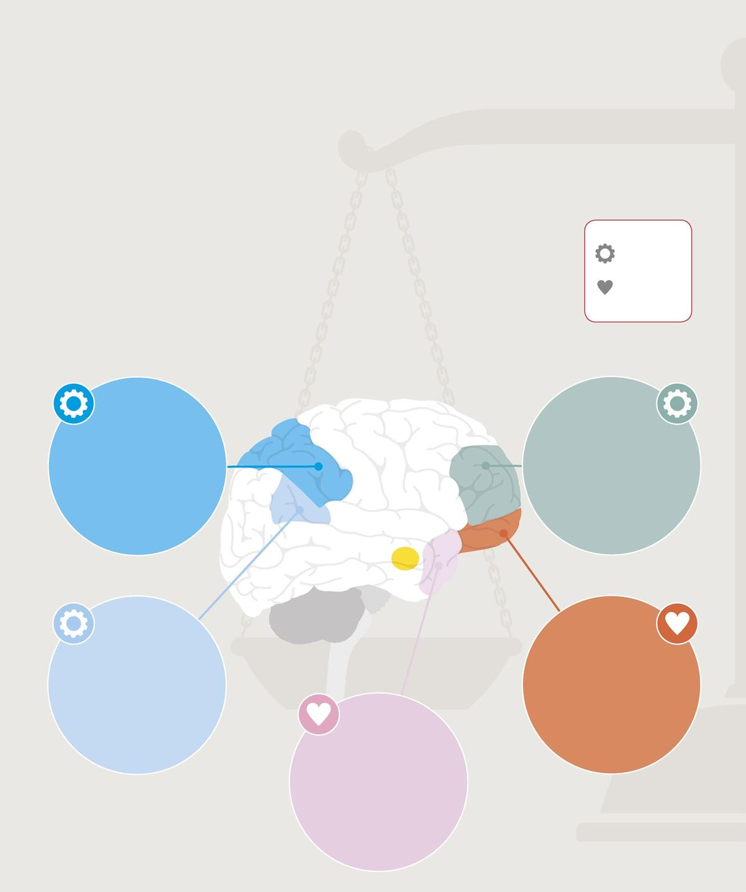
Hầu hết người sống trong môi trường bình thường đều hình thành cảm nhận bản năng về đúng và sai. Đạo đức dường như một phần được “cài sẵn”, phát sinh từ sự kết hợp giữa lý trí và cảm xúc.
Đúng và sai đến từ đâu?
Các chuẩn mực xã hội dựa trên đạo đức chung tồn tại ở mọi nền văn hóa, giúp gắn kết xã hội. Khi đưa ra quyết định đạo đức, hai hệ thống não bộ cùng tham gia: một hệ thống “lý trí” dùng công sức và rõ ràng cân nhắc mặt lợi và hại của các hành động có thể có; và một hệ thống nhanh chóng tạo ra những cảm giác đúng sai mang tính cảm xúc, trực quan. Sự tương tác giữa lý trí và cảm xúc rất phức tạp, nhưng việc nghiên cứu hoạt động não khi người ta phải vật lộn với các tình huống đạo đức đã xác định được những vùng then chốt liên quan.
Phán xét đạo đức Khi đưa ra quyết định, cảm xúc của chúng ta đóng vai trò then chốt. Để cân nhắc các vấn đề đạo đức, những vùng não liên quan đến trải nghiệm cảm xúc phối hợp với những vùng ghi nhận sự thật và xem xét những hành động cùng hệ quả có thể có.
CHÚ GIẢI
Mạch lý trí.
Mạch cảm xúc.
Vỏ não trước trán lưng ngoài
Thùy đỉnh
Tham gia vào trí nhớ làm việc và kiểm soát nhận thức, vùng vỏ não này cung cấp thông tin cần thiết giúp chúng ta nhận biết các tín hiệu xã hội, tìm hiểu niềm tin và ý định của người khác — chẳng hạn một hành động có mang tính hưng hăng hay một bối cảnh xã hội nên ảnh hưởng thế nào đến hành vi.
Vùng này tích hợp thông tin lý trí và cảm xúc. Nó cũng có thể đối kháng với vùng trước trán bụng giữa để kìm nén các thôi thúc cảm xúc khi xử lý những tình huống đạo đức phức tạp mà ưa chuộng giải pháp nhận thức dùng trí nhớ hoặc dữ liệu khác.
Hạch hạnh nhân.
Vỏ não trước trán bụng giữa Vùng này là một cấu trúc quan trọng cho phép các phản ứng cảm xúc ảnh hưởng đến những quyết định đạo đức đã được lý trí hóa. Ở những người tâm thần phản xã, kết nối giữa vùng này với cả hạch hạnh nhân lẫn các đường dẫn phần thưởng đều bị gián đoạn.
Rãnh thái dương trên sau Phần vỏ não này hoạt động cùng thùy đỉnh, cung cấp thông tin để hướng dẫn trực giác đạo đức và gán niềm tin cho người khác, đồng thời tích hợp dữ liệu này với những kết quả có thể có của hành động. Nó cũng giúp đánh giá xem một người có đang nói dối hay không.
NHÌN TỪ BÊN NGOÀI
Cực thái dương
Cực thái dương thực hiện cả chức năng xử lý xã hội, chẳng hạn nhận diện khuôn mặt và tìm hiểu trạng thái tinh thần của người khác, lẫn chức năng xử lý cảm xúc. Nó cũng có thể giúp kết hợp các dữ liệu tri giác phức tạp với những phản ứng cảm xúc trực quan.

Lòng vị tha
TÂM THẦN PHẢN XÃ
Lòng vị tha — khi một người hành động vì lợi ích của người khác dù phải trả giá hoặc chịu rủi ro về mặt cá nhân — bao gồm việc cảm thông với nỗi đau của người khác rồi hành động giúp đỡ. Nó liên quan đến những quá trình riêng biệt. Ảnh quét não cho thấy hành động vị tha kích hoạt các đường dẫn phần thưởng (reward pathways) (xem tr.112–113), củng cố hành vi và dập tắt sự khó chịu về cảm xúc. Sự quên mình là một đặc điểm nổi bật của hành vi con người và là một bí ẩn tiến hóa, xét đến những nguy hiểm mà người vị tha phải đối mặt.
Những người tâm thần phản xã có thể hiểu đạo đức và vì thế có thể bắt chước các tương tác xã hội bình thường. Điều này có nghĩa là dù họ cư xử tàn ác, họ vẫn rất khó bị nhận diện. Nguyên nhân sâu xa có thể là sự đứt gãy giữa các vùng não liên kết việc ra quyết định logic với cảm xúc, khiến họ không thể nắm bắt hậu quả từ hành vi của mình.
BẮT CHƯỚC CẢM XÚC
Vỏ não đai sau Vùng này hoạt động khi môi trường của chúng ta thay đổi và khi chúng ta nghĩ về bản thân. Nó có thể giúp đánh giá mức độ nghiêm trọng của các hành vi vi phạm và phản ứng phù hợp bằng cách đóng vai trò trung tâm tích hợp những trực giác về trạng thái tinh thần của người khác.
Hồi trán giữa Vùng não này quan trọng cho việc ra quyết định và lựa chọn giữa các hành động tiềm năng thay thế. Điều này đặc biệt đúng khi có xung đột giữa nhiều lựa chọn.
Nhân accumbens.
NHÌN TỪ BÊN TRONG
TỔN THƯƠNG NÃO CÓ ẢNH HƯỞNG ĐẾN ĐẠO ĐỨC KHÔNG?
NHÌN THẤY AI ĐÓ BỊ TỔN THƯƠNG DO TAI NẠN TẠO RA HOẠT ĐỘNG NÃO TƯƠNG TỰ NHƯ CHÍNH NGƯỜI NHÌN BỊ TỔN THƯƠNG
Vỏ não trước trán quỹ đạo Vùng này được kích hoạt khi xem các cảnh mang tính đạo đức, xử lý các kích thích cảm xúc. Nó hỗ trợ biểu diễn những phần thưởng và hình phạt công bằng cho hành vi quan sát được, cũng như đưa ra các lựa chọn đạo đức do cảm xúc thúc đẩy.
Điều đó phụ thuộc vào vùng bị ảnh hưởng. Chẳng hạn, tổn thương ở những vùng liên kết cảm xúc với lựa chọn đạo đức có thể khiến người ta đưa ra những quyết định “lạnh lùng”.

Học nói
Một ngôn ngữ
Sự ưu tiên bẩm sinh của chúng ta đối với việc nhìn vào khuôn mặt giúp trẻ sơ sinh tập trung chú ý vào những người đang nói chuyện với trẻ. Sau đó, việc giao tiếp bằng mắt và theo dõi ánh mắt cho phép trẻ liên kết những từ nghe được với điều đang được nói đến. Khi học từ mới, trẻ sơ sinh mắc lỗi “mở rộng quá mức” bằng cách dùng một từ để gọi nhiều vật, chẳng hạn dùng từ “ruồi” để chỉ bất cứ thứ gì nhỏ và tối.
Khác với các loài khác, con người có bộ não với những vùng chuyên biệt riêng cho ngôn ngữ. Trẻ sinh ra đã sẵn sàng học ngôn ngữ, tiếp thu nó thông qua sự tương tác giữa những vùng chuyên biệt này của não và chính những trải nghiệm riêng của trẻ. Để học ngôn ngữ, chúng ta cũng phải tương tác với người khác.
Mốc phát triển lời nói Khung thời gian chính xác để thành thạo ngôn ngữ khác nhau giữa các trẻ, nhưng tất cả đều tiến triển qua các giai đoạn chính theo một trình tự tương tự — từ tiếng rì rầm và bập bẹ đến những từ đầu tiên và cuối cùng là câu hoàn chỉnh.
Phụ âm đầu tiên: c và g.
Thêm ngữ điệu vào âm thanh, cộng thêm nhiều phụ âm, ví dụ các từ nói “ma-ma”, “da-da” (chưa phải từ thật).
NÓI
Những từ thật sự đầu tiên.
Tiếng rì rầm (chỉ có nguyên âm) Tiếng cười bắt đầu từ 6 tuần tuổi.
Bập bẹ, ví dụ “ba-ba”, “ga-ga” (những âm tiết thật).
HIỂU
10–12 tháng
Hiểu một số từ thông dụng chỉ vật hoặc người.
Có thể phân biệt giữa âm nguyên âm và phụ âm.
Ưu tiên âm thanh giọng nói của mẹ.
Hiểu những chỉ dẫn đơn giản, ví dụ “đưa bóng cho mẹ”.
Phản ứng với tên của mình.
Trẻ bắt đầu theo dõi ánh mắt của người chăm sóc và bắt đầu liên kết những từ nghe được với vật mà trẻ đang nhìn.
Cấu trúc giải phẫu cổ họng thay đổi để tạo ra âm nói.
CHUẨN BỊ
10–12 tháng
Ưu tiên nhìn vào khuôn mặt (từ khi sinh) — trước đó, nhu cầu thở khi đang bú mẹ cản trở điều này.
Bắt đầu hiểu việc chỉ tay.
Bán cầu trái của não trở nên chuyên biệt cho lời nói.
TRƯỚC KHI SINH
ĐẾN 4
4
5
KHOẢNG 6
ĐẾN 6–8
9–10
10–11 10–12
THÁNG

Bộ não song ngữ
Chất trắng (white matter) được bảo tồn ở người lớn tuổi nói song ngữ.
RƯỢU VÀ NGÔN NGỮ
Trong não của người nói song ngữ, các ngôn ngữ “cạnh tranh” nhau để giành sự chú ý. Điều này tạo ra sự luyện tập vô thức trong việc bỏ qua thông tin không liên quan, và các nghiên cứu cho thấy người song ngữ làm điều này tốt hơn người chỉ nói một ngôn ngữ. Khả năng học ngôn ngữ thứ hai như người bản xứ thường biến mất sau khoảng bốn tuổi, đặc biệt là về phát âm. Não của người song ngữ cao tuổi cho thấy chất trắng được bảo tồn tốt hơn, điều có thể bảo vệ họ khỏi tác động của suy giảm nhận thức.
Một nghiên cứu trên người học ngôn ngữ thứ hai đã xem xét liệu đồ uống có cồn có cải thiện lời nói và phát âm bằng cách giảm sự tự ý thức hay không. Cách này có hiệu quả đến một mức độ nhất định — nhưng sau quá nhiều ly, hiệu suất suy giảm nhanh chóng.
BÁN CẦU PHẢI
Vùng chất xám được kích hoạt.
BÁN CẦU TRÁI
BONJOUR, ÇA VA?
BHLEES CHIDEVSSSS
Các vùng song ngữ Những vùng chất xám (thể hiện bằng màu xanh) được kích hoạt ở người nói song ngữ khi họ chuyển đổi giữa các ngôn ngữ.
Giai đoạn “điện tín” của những phát ngôn hơn hai từ. Trẻ cũng bắt đầu dùng từ nghi vấn (ví dụ “sách của tôi ở đâu?”) và các câu phủ định (ví dụ “không làm thế”).
Bắt đầu lời nói giống câu, gồm nhiều từ: ví dụ “giày ướt hết”. Cũng bắt đầu dùng “ở đâu”, “tại sao” và đảo ngữ, ví dụ “con đi đâu thế?” Việc dùng ngữ pháp, số nhiều và thì quá khứ ngày càng tăng.
Vốn từ thường khoảng 3.000 từ và
Giai đoạn một từ: có thể dùng từ đơn để gọi những vật quen thuộc, ví dụ sữa, mèo, cốc. Giai đoạn hai từ bắt đầu, ví dụ “mẹ ăn”, “bố hư”, “gấu bông lớn”.
Sử dụng ngôn ngữ đầy đủ — dù nhiều sắc thái tinh tế của nghĩa vẫn còn phải học hỏi thêm.
Có thể hiểu khoảng 50 từ. Trở nên chuyên biệt trong việc nghe các âm nói trong ngôn ngữ của mình.
Có thể hiểu số từ nhiều hơn khoảng năm lần so với vốn từ biết nói.
VÀO KHOẢNG 18 THÁNG TUỔI, XUẤT HIỆN SỰ BÙNG NỔ VỐN TỪ — TỐC ĐỘ HỌC TỪ TĂNG LÊN KHOẢNG 40 TỪ MỖI TUẦN
Bắt đầu tự chỉ tay, thực chất là “xin” tên gọi của các từ.
KHOẢNG 12
TỪ 12
12–18
18 THÁNG
2 NĂM
2–2½
TỪ 3 TRỞ ĐI
5
NĂM

Các vùng
Bộ não người, khác với bất kỳ loài động vật nào khác, có những vùng chuyên biệt riêng cho ngôn ngữ, thường nằm ở bán cầu trái. Khả năng độc đáo của con người trong việc giao tiếp bằng ngôn ngữ được cho là một lợi thế tiến hóa.
Vỏ não vận động
Vỏ não vận động cho phép thực hiện các cử động cơ thể cần thiết để tạo ra ngôn ngữ — chẳng hạn cử động lưỡi, môi và hàm. Vỏ não vận động được kích hoạt khi nghe hoặc nói những từ có liên quan ngữ nghĩa đến các bộ phận cơ thể. Ví dụ, từ “nhảy múa” có thể liên quan đến đôi chân của bạn.
Các vùng Broca và Wernicke
Hai vùng ngôn ngữ chính là vùng Broca và vùng Wernicke. Vùng Broca liên quan đến việc cử động miệng để phát âm thành từ. Khi học ngôn ngữ mới, những phần riêng biệt của vùng Broca được kích hoạt khi chúng ta nói bằng tiếng mẹ đẻ hoặc tiếng không bản xứ. Ở vùng Wernicke, những từ ta nghe hoặc đọc được hiểu và được chọn để phát âm thành lời nói. Tổn thương ở phần này của não có thể khiến người ta nói một cách kỳ lạ, tạo ra những câu vô nghĩa.
Lời nói truyền qua không khí dưới dạng sóng âm.
TỔN THƯƠNG NÃO VÀ THAY ĐỔI NGÔN NGỮ
HELLO
BONJOUR
SHWMAE ASALAAM ALAIKUM
Đã có những trường hợp bệnh nhân bị tổn thương não dường như tỉnh dậy và nói một ngôn ngữ khác hoặc với giọng khác. Hội chứng giọng nước ngoài là một ví dụ về tình trạng y khoa như vậy. Những trường hợp này rất hiếm, và chưa có đủ nghiên cứu khoa học được tiến hành để hiểu rõ chúng.
GUTEN TAG
PRIVET
OLÁ
KONNICHIWA
CIAO
HOLA
- # & @ å ž ø ï ¿ œ » § ë
Nói và hiểu Việc xử lý ngôn ngữ là một nhiệm vụ phức tạp. Ngay cả việc phát âm hay giải mã một lời chào đơn giản như “xin chào” cũng đòi hỏi nhiều vùng khác nhau của não phải phối hợp cùng nhau.

Mất ngôn ngữ
Mất ngôn ngữ (aphasia) là tình trạng y khoa trong đó người bệnh không thể hiểu hoặc tạo ra ngôn ngữ, đọc, hoặc viết do tổn thương gây ra cho não — chẳng hạn như hậu quả của chấn thương, đột quỵ (stroke) hoặc khối u. Tình trạng này có thể tương đối nhẹ hoặc nặng. Có nhiều loại mất ngôn ngữ (xem một số ví dụ trong bảng dưới đây). Một số được đặt tên theo vùng não bị ảnh hưởng hoặc loại lời nói được tạo ra. Tuy nhiên, chứng mất ngôn ngữ có thể ảnh hưởng đến ngôn ngữ, đọc và viết theo nhiều cách khác nhau, và một số khó khăn đó có thể không thuộc vào một loại hay phạm trù cụ thể nào.
Hồi trên bờ
Dù không được coi là một trong những vùng ngôn ngữ chính, hồi trên bờ vẫn làm việc cùng hồi góc để nhận biết và xử lý ngôn ngữ nhằm gán ý nghĩa cho các từ.
VỎ NÃO
ORCO
VẬN ĐỘNG
AL ARGIN
S
HỒI TRÊN BỜ
Hồi góc · Vùng Wernicke.
VÙNG BROCA
EX CORT ORY WERN
THÍNH GIÁC
CÁC LOẠI MẤT NGÔN NGỮ
Hồi góc
LOẠI
TRIỆU CHỨNG
Hồi góc (angular gyrus) liên quan đến ngôn ngữ phức tạp. Nó phối hợp thông tin thính giác, cảm giác và thị giác để giúp chúng ta hiểu các từ và khái niệm. Hồi góc cho phép liên kết những từ cụ thể với các hình ảnh, ý tưởng hoặc cảm giác khác nhau.
Toàn thể
Dạng nặng nhất của mất ngôn ngữ, gây suy giảm chung trong việc hiểu, nhận thức và tạo ra ngôn ngữ.
Broca
Việc tạo ra lời nói bị ảnh hưởng và có thể giảm còn chỉ vài từ, vốn có thể bị ngắt quãng hoặc “không trôi chảy” trong bản chất.
Vỏ não thính giác Vỏ não thính giác là một phần của thùy thái dương ở bên của não. Vùng này xử lý thông tin thính giác ở người và các động vật có xương sống khác để thông tin có thể được nghe thấy. Vỏ não thính giác được chia thành các phần (xem tr.76), giúp con người nghe được những âm thanh phức tạp, chẳng hạn các từ trong một cuộc trò chuyện.
Wernicke
Không có khả năng hiểu ý nghĩa của các từ. Việc tạo ra lời nói không bị ảnh hưởng, nhưng có thể dùng những từ không liên quan, tạo thành các cụm từ vô nghĩa.
Khó khăn trong việc tìm từ khi nói hoặc viết. Điều này có thể dẫn đến ngôn ngữ mơ hồ, gây ra sự bực bội đáng kể.
Vô danh
Tiến triển nguyên phát
Khả năng ngôn ngữ suy giảm dần dần, từng bước. Dạng này có thể do các bệnh như sa sút trí tuệ gây ra.
CÓ KHOẢNG 6.500 NGÔN NGỮ KHÁC NHAU ĐƯỢC NÓI TRÊN THẾ GIỚI
Dẫn truyền
Một dạng hiếm của mất ngôn ngữ gây khó khăn khi lặp lại các cụm từ, đặc biệt là khi cụm từ hoặc câu dài và phức tạp.
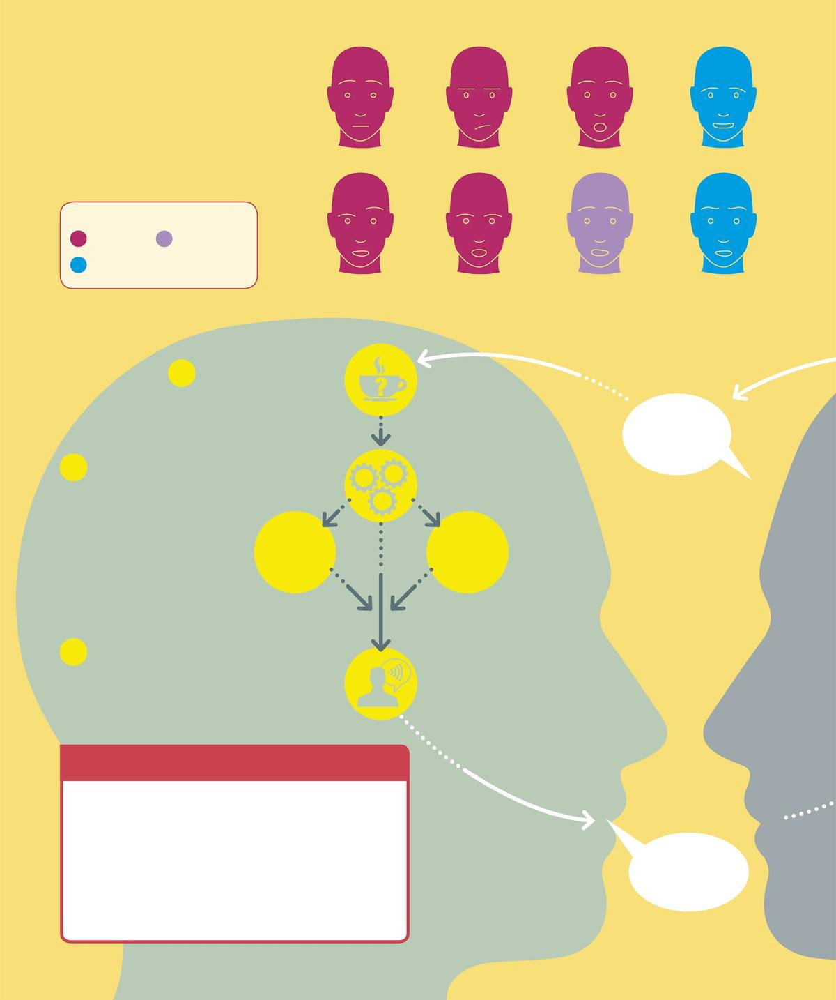
Biểu cảm khuôn mặt Chúng ta liên tục dùng biểu cảm khuôn mặt trong trò chuyện. Với tư cách người nói, chúng ta nhướng mày để nhấn mạnh một ý hoặc báo hiệu một câu hỏi; và với tư cách người nghe, chúng ta dùng biểu cảm để thể hiện sự quan tâm đối với điều đang được nói. Một nghiên cứu đã xem xét những lý do hàng đầu khiến người ta dùng biểu cảm khuôn mặt trong trò chuyện.
CÚ NHÚN MẶT
ĐANG SUY NGHĨ
NHẤN MẠNH
ĐỒNG CẢM
CHÚ GIẢI
Người nói.
Cả hai.
Người nghe.
CÂU HỎI
KỂ LẠI
PHẢN ỨNG CÁ NHÂN
TÔI ĐANG NGHE
R KE EA SP E TH
Ý tưởng thông điệp Điểm khởi đầu của
1
một cuộc trò chuyện là một ý tưởng mà người nói muốn thể hiện và ý định thể hiện nó.
KHÔNG, CẢM ƠN
Xây dựng Người nói chọn lọc
2
LUÊN PHIÊN
những từ có nghĩa phù hợp (ngữ nghĩa) rồi đưa chúng vào hình thức và trật tự đúng (cú pháp) để tạo nên ý nghĩa. Ví dụ, “Bạn có muốn uống gì không?” là một câu hỏi; “Bạn muốn uống một ly” là một câu khẳng định; còn “Uống bạn muốn ly một” là vô nghĩa. Vùng Broca (xem tr.126) đóng vai trò then chốt trong hai quá trình này.
THÍCH
BẠN CÓ MUỐN
SẼ
BẠN
NGỮ NGHĨA
CÚ PHÁP
Phát âm Để nói thông điệp, người nói
3
người nói cử động miệng, lưỡi, môi và cổ họng, được kiểm soát bởi vỏ não vận động, để tạo ra các âm nói với ngữ điệu phù hợp.
CÂU ĐƯỜNG VƯỜN
Chúng ta có thể bị lạc hướng nếu phần đầu của một thông điệp gợi ra ý tưởng bị phần sau mâu thuẫn lại. Ví dụ: “Chiếc xe dừng lại tại hiện trường tai nạn đã sớm bị cảnh sát bao vây.” Ban đầu chúng ta hiểu “dừng lại” là việc chiếc xe đã làm; nhưng khi nghe “đã sớm”, rõ ràng là chiếc xe đã bị cảnh sát chặn lại. Chúng ta phải quay lại đầu thông điệp để hiểu nó. Loại câu này được gọi là câu đường vườn (garden path sentence).
BẠN CÓ MUỐN UỐNG GÌ KHÔNG?
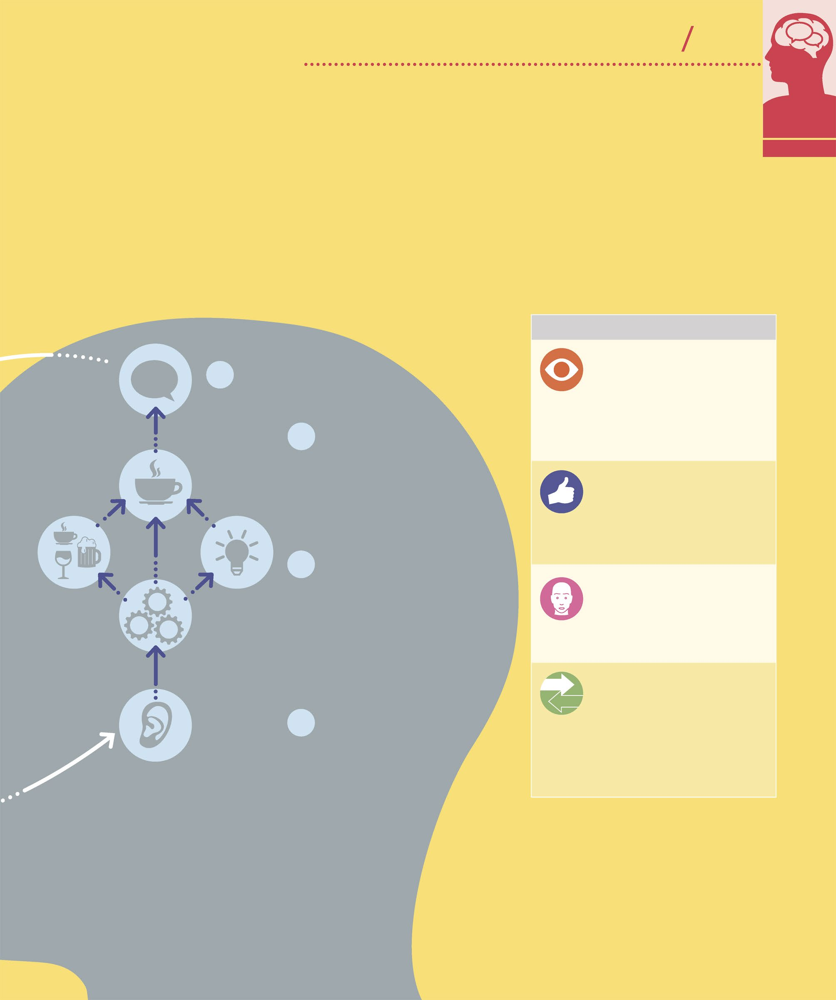
Tiến hành một cuộc trò chuyện
Vượt ra ngoài lời nói
Chúng ta liên tục dùng các tín hiệu phi ngôn ngữ bên cạnh lời nói trong trò chuyện. Ngoài việc thêm sự nhấn mạnh (qua biểu cảm khuôn mặt) hoặc hiệu ứng thị giác (qua cử chỉ), những tín hiệu này cho phép người không nói có một vai trò trong sự hợp tác trò chuyện, khuyến khích người nói mà không ngắt lời hay giành quyền nói.
Một cuộc trò chuyện là nỗ lực chung giữa người nói và người nghe, liên quan đến nhiều hơn việc tạo ra và hiểu các từ. Chúng ta luân phiên, báo hiệu sự hiểu biết và điều chỉnh suy nghĩ cho cùng nhịp.
NGƯỜI NGHE
CÁC YẾU TỐ CỦA TRÒ CHUYỆN
Nhìn
Người nghe nhìn vào người đối thoại nhiều hơn hẳn người nói. Họ làm vậy để thể hiện sự quan tâm — vì nếu thiếu điều đó, người nói thường ngập ngừng. Ngược lại, người nói chỉ thỉnh thoảng nhìn người nghe.
Phản hồi Giờ đây người nghe có thể đáp lại
4
và đến lượt mình trở thành người nói.
Giải mã thông điệp Thường thì người nghe thêm vào
3
trải nghiệm của bản thân để hiểu thông điệp. Ví dụ, nếu có người hỏi “Bạn có muốn uống gì không?” lúc 9 giờ sáng, chúng ta có thể nghĩ đến cà phê, nhưng vào 9 giờ tối, rất có thể lời mời là một loại đồ uống khác.
Cử chỉ
Chúng ta dùng nhiều loại cử chỉ tay (xem tr.119), gồm cả các dấu hiệu quy ước — chẳng hạn “giơ ngón tay cái lên”, chỉ tay và những cử động tay biểu cảm — để nhấn mạnh thông điệp.
Giải mã thông điệp Người nghe nhận ra các từ và
2
Các tín hiệu “tôi đang nghe”
hiểu cấu trúc thông điệp bằng cách phân tích cú pháp (parsing). Việc phân tích cú pháp bao gồm rút ý nghĩa từ trật tự của các từ. Ví dụ, “chó cắn người” có cùng các từ nhưng ý nghĩa khác với “người cắn chó”. Vùng Wernicke (xem tr.126) đóng vai trò then chốt trong việc hiểu lời nói.
Người nghe dùng âm thanh và cử chỉ phi ngôn ngữ, chẳng hạn nói “mmm” hoặc gật đầu, để cho thấy họ đang tham gia cuộc trò chuyện dù không nói.
PHÂN TÍCH CÚ PHÁP
NHẬN DIỆN TỪ
Luân phiên
Trò chuyện đòi hỏi phải luân phiên, và chúng ta bắt đầu học điều này từ lúc còn sơ sinh. Những người đối thoại hiếm khi cắt ngang nhau, dù khoảng cách trung bình giữa các lượt chỉ là vài phần mười giây.
Nghe âm nói Lời nói của người nói
1
được nghe qua đường thính giác trong não của người nghe.
Nói và nghe
Người nói và người nghe đổi vai nhiều lần trong một cuộc trò chuyện — và với tư cách người nói, chúng ta cũng theo dõi chính đầu ra lời nói của mình. Dù cả hai vai trò đều liên quan đến nhiều bước, mọi thứ có thể diễn ra rất nhanh — mất từ 0,25 giây từ lúc có ý tưởng đến lúc nói ra, và từ 0,5 giây để hiểu. Sự ngập ngừng xảy ra khi người nói cần thời gian để “bắt kịp” quá trình lên kế hoạch và tạo ra lời nói phức tạp.
MỌI NGƯỜI CẮT NGANG NHAU ÍT HƠN 5% THỜI GIAN TRÒ CHUYỆN
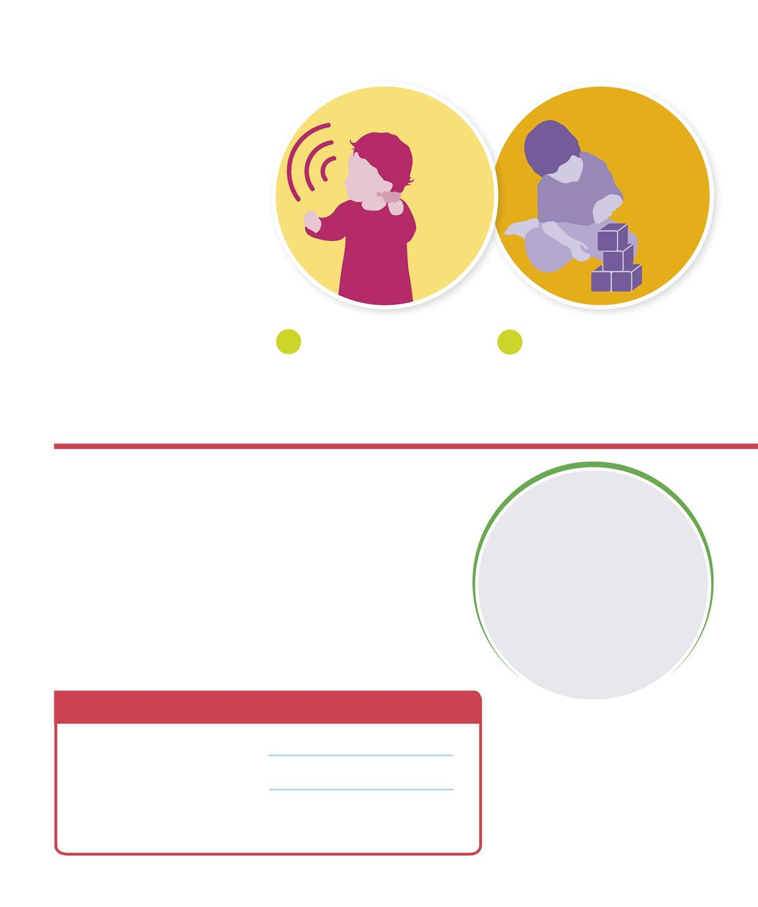
TỪ LÚC SINH TRỞ ĐI
TỪ 3 TUỔI
Học đọc và viết
Khả năng đọc và viết là điều mà hầu hết mọi người bắt đầu học từ khi còn nhỏ. Khi não bộ chúng ta phát triển, ta học được những kỹ năng đọc và viết quan trọng. Đến khi trưởng thành, chúng ta có thể đọc trung bình 200 từ mỗi phút. Việc đọc đòi hỏi nhiều vùng của não và cơ thể phải phối hợp cùng nhau. Ví dụ, khi bạn đọc, mắt bạn cần nhận ra các từ trên trang giấy, rồi não bạn xử lý ý nghĩa của từ đó. Viết sử dụng các vùng ngôn ngữ của não (xem tr.126–127), các vùng thị giác, và các vùng vận động liên quan đến sự khéo léo của bàn tay để thực hiện các cử động cần thiết.
Trẻ có thể bắt đầu nhận ra các ký hiệu khi chơi.
Trẻ sơ sinh bắt chước các âm thanh mà người lớn tạo ra.
Tạo âm thanh Trẻ sơ sinh tạo ra các âm thanh bắt chước
Nhận ra ký hiệu Trẻ bắt đầu hiểu rằng
1
2
người lớn nhưng thường không được nhận ra thành những từ. các ký hiệu nghĩa là gì khi chúng nằm trong văn bản. Trẻ Đây là nền tảng để học phát triển dùng vỏ não thị giác (visual cortex) và trí nhớ để các kỹ năng ngôn ngữ. Trẻ sơ sinh nhìn và xử lý các biểu cảm chuyển các ký hiệu mà trẻ thấy thành âm thanh. khuôn mặt bằng vỏ não thị giác và các vùng khác. Khi trẻ lớn lên, trẻ kết nối những âm thanh này Khi ấy trẻ học cách liên tưởng âm thanh với ý nghĩa của các từ và bắt đầu cùng biểu cảm khuôn mặt với các sự vật trong thế giới. liên hệ ngôn ngữ với văn bản viết.
Đọc và viết
ĐIỀU GÌ GÂY RA CHỨNG KHÓ ĐỌC (DYSLEXIA)?
Nghiên cứu cho thấy trẻ mắc chứng khó đọc gặp khó khăn trong việc hiểu các âm thanh do chữ cái tạo ra, nhưng chứng khó đọc cũng được thấy ở những nền văn hóa nơi các ký hiệu đại diện cho một ý tưởng thay vì một âm thanh.
Não bộ chúng ta được thiết kế sẵn để nói, nhưng khả năng đọc và viết thì không phải là bẩm sinh. Chúng ta phải bắt đầu huấn luyện não ngay từ khi còn là trẻ sơ sinh để phát triển những kỹ năng phức tạp này.
CHỨNG KHÓ VIẾT (DYSGRAPHIA)
NGƯỜI ĐỌC NHANH CÓ THỂ ĐỌC HƠN 700 TỪ MỖI PHÚT
Chứng khó viết là không có khả năng viết rõ ràng. Đây có thể là triệu chứng của một số tình trạng não bộ, chẳng hạn như bệnh Parkinson, ảnh hưởng đến các kỹ năng vận động tinh (fine motor skills). Chữ viết có thể run rẩy và không rõ ràng, hoặc hoàn toàn méo mó.
đÂy Là mỘT cÂu văn đƯợC VIẾt bỞi MỘt ngƯời BỊ chỨNG khó VIẾt
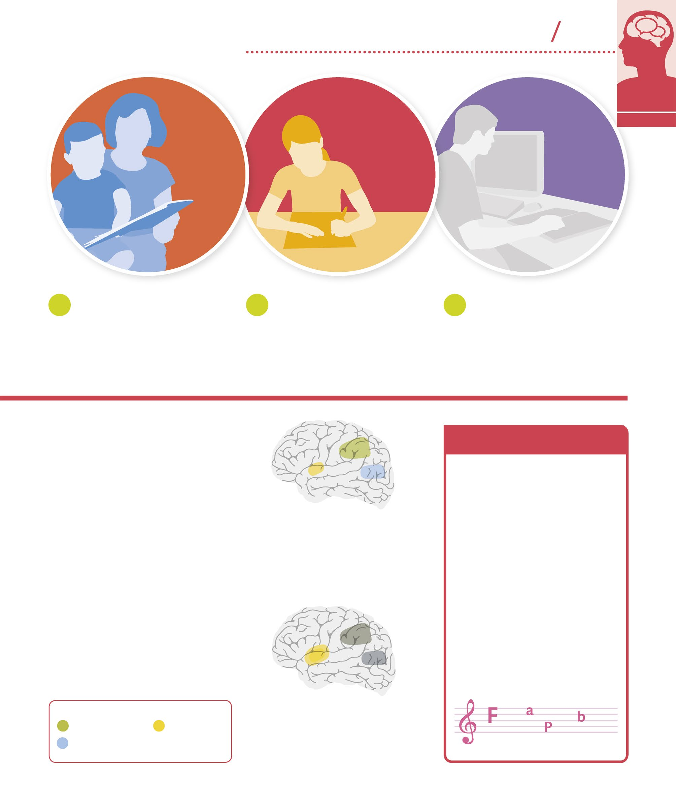
TỪ 13 TUỔI
TỪ 11 TUỔI
TỪ 5 TUỔI
Khi các kỹ năng vận động tinh tiến bộ, chữ viết trở nên trôi chảy hơn.
Đọc cho trẻ nghe giúp trẻ liên hệ âm thanh với văn bản.
Chúng ta ngày càng đọc văn bản trên màn hình và gõ từ trên bàn phím.
Bắt đầu đọc Đọc to có thể cải thiện khả năng đọc của trẻ
Mở rộng vốn từ Khi lớn lên, chúng ta trải nghiệm
Tiếp tục học hỏi Khi trưởng thành, chúng ta tiếp tục học và
3
4
5
khả năng đọc. Nghe một câu chuyện kích hoạt vỏ não thính giác (auditory cortex) để nghe các từ, sau đó các từ này được thùy trán (frontal lobe) xử lý. Sách tranh giúp trẻ luyện tập liên hệ từ ngữ với hình ảnh, và việc mời trẻ cùng đọc giúp xây dựng vốn từ vựng và khả năng hiểu.
nhiều hơn về thế giới quanh ta, từ đó ta học và luyện tập các kỹ năng đọc và viết. Vốn thấy những điều mới, bổ sung vào vốn từ vựng. từ vựng của chúng ta không ngừng được mở rộng. Sự thông hiểu, khả năng hiểu được Học đọc và viết mới chỉ là khởi đầu cách sử dụng từ ngữ, đòi hỏi mọi thùy của câu chuyện. Toàn bộ não bộ được yêu cầu để não (xem tr.30) và tiểu não (cerebellum) để hiểu và sử dụng ngôn ngữ thành công. sức khỏe não bộ rất quan trọng cho cả việc đọc và viết.
Chứng khó đọc
NGUYÊN TẮC BẢNG CHỮ CÁI (ALPHABETIC PRINCIPLE)
Chứng khó đọc có nhiều dạng khác nhau, ảnh hưởng đến khả năng đọc, viết, hoặc cả hai của một người. Người ta cho rằng tới một trong năm người mắc chứng khó đọc. Hiện vẫn chưa có được một giải thích thần kinh học đầy đủ về nguyên nhân của chứng khó đọc. Các nghiên cứu đã gợi ý rằng một số cấu trúc nhất định của não hoạt động khác đi ở người mắc chứng khó đọc (xem bên phải). Vì trẻ mắc chứng khó đọc thường gặp khó khăn với khả năng đọc của mình, nên khó xác định liệu chính não đang phát triển có ảnh hưởng đến chứng khó đọc hay bản thân chứng khó đọc có tác động đến não đang phát triển.
Nguyên tắc bảng chữ cái là ý tưởng rằng từng chữ cái riêng lẻ hoặc các nhóm chữ cái đại diện cho các âm thanh khi được phát âm thành tiếng. Nguyên tắc bảng chữ cái gồm hai phần:
Đọc ở não không mắc chứng khó đọc Vùng Broca (Broca's area) giúp tạo và phát âm lời nói. Vỏ não đỉnh-thái dương (parietal-temporal cortex) làm việc để phân tích và hiểu các từ mới. Vùng chẩm-thái dương (occipital-temporal area) tạo ra các từ và hỗ trợ ý nghĩa, chính tả và phát âm.
1. Hiểu biết bảng chữ cái Học rằng các từ được tạo thành từ những chữ cái đại diện cho các âm thanh phát ra khi đọc to các chữ cái đó.
Lượng hoạt động giảm
Lượng hoạt động tăng
2. Mã hóa lại ngữ âm (phonological recoding) Hiểu cách các chuỗi chữ cái trong từ viết kết hợp lại để tạo thành âm thanh, nhờ đó mà có thể viết đúng chính tả và phát âm.
Đọc ở não mắc chứng khó đọc Vùng Broca được kích hoạt để tạo và phát âm các từ, nhưng các vùng đỉnh-thái dương và chẩm-thái dương lại ít hoạt động hơn. Vùng Broca có thể bị kích hoạt quá mức để bù đắp cho sự thiếu kích thích của các vùng khác.
CHÚ THÍCH
Vùng đỉnh-thái dương
Hồi trán dưới (vùng Broca)
Vùng chẩm-thái dương